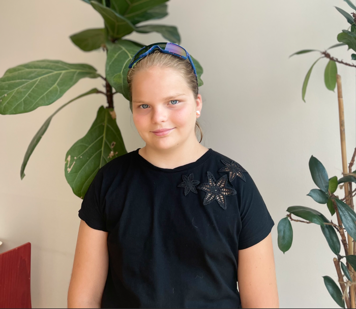
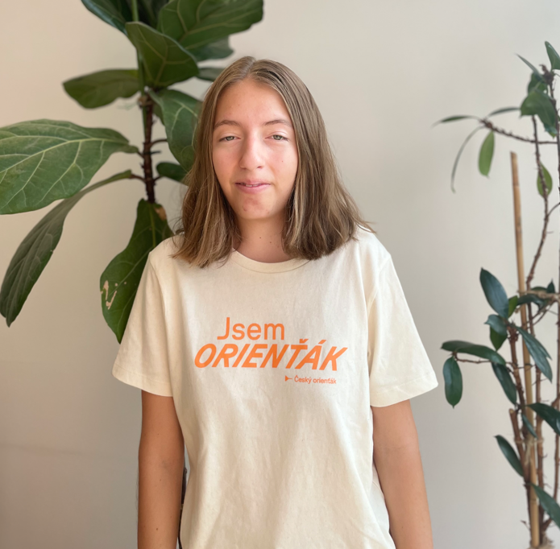
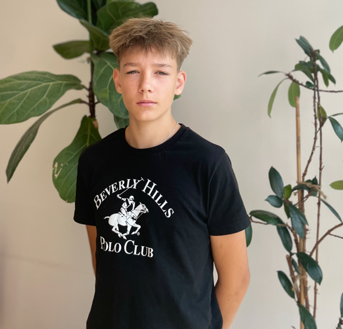
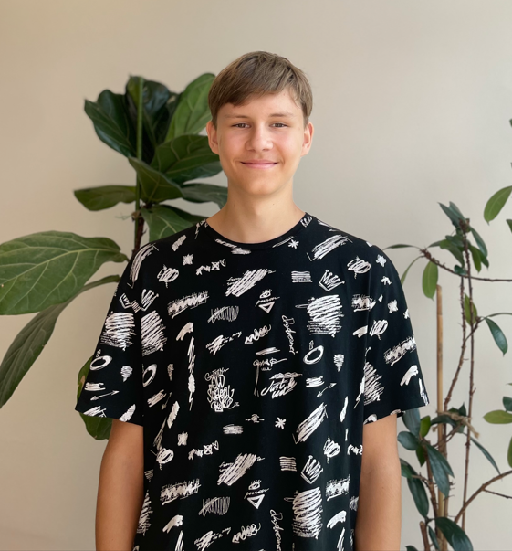
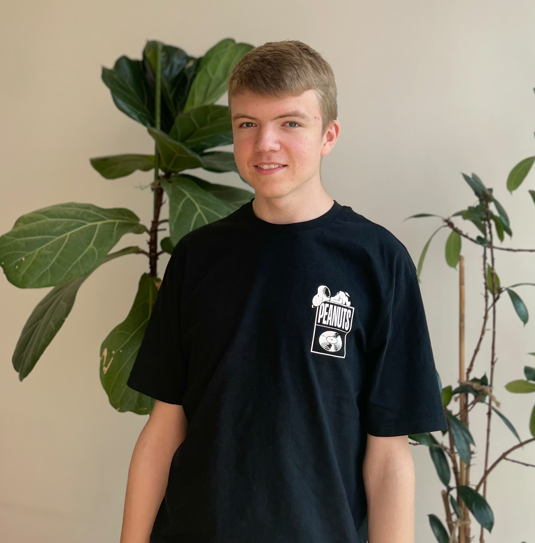

O nás
Tato aplikace byla vytvořena studenty na AI Startup Campu v Brně.
Jak funguje Sky Notes AI?
Rozpoznání not ze zvuku: Stačí zazpívat nebo zahrát notu a naše AI přes mikrofon zjistí, o jakou notu se jedná. Skvělé pro procvičování nástroje nebo hlasu.
Rozpoznání not z papíru: Sky Notes AI umí také rozpoznat noty z notového zápisu nebo fotografie not. Stačí nahrát nebo vyfotit obrázek a aplikace analyzuje, jaké noty se na něm nachází.

Zuzana Kurečková, hraju na klavír a běhám orientační běh, se ségrou jsme dělali prezentace a komletovali jsme projekt.

Aneta Kurečková, 8 let hraju na klavír a jsem organizátorka, se ségrou jsme dělali prezentace a canvas.

Ahoj jsem Martin Štork je mi 13 a hraju fotbal.Na tomhle projektu jsem dělal naši reklamu a program na rozpoznávání not.

Petr Zelinka, hraju tenis a volejbal a dělal jsem design této stránky a pomáhal s programováním.

Petr Skřivánek, hraju na klávesy a dělal jsem webovou stránku
Děkujeme za podporu naší cesty!